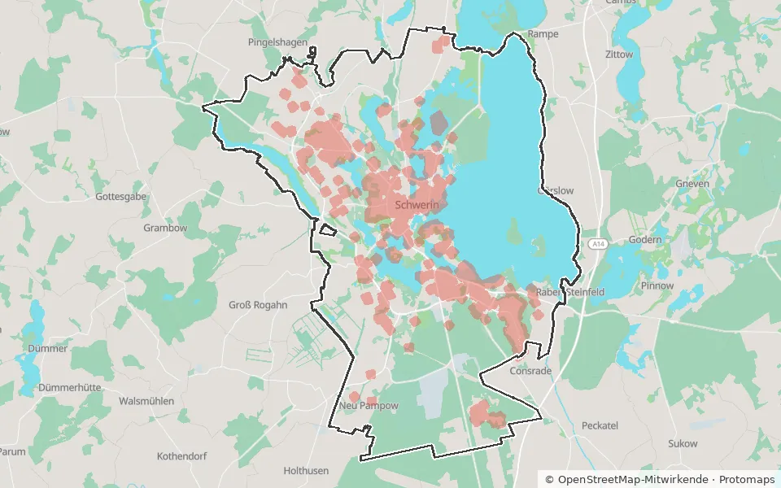
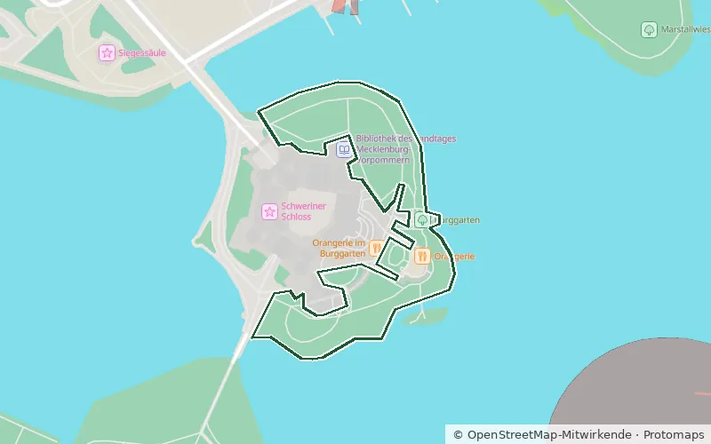
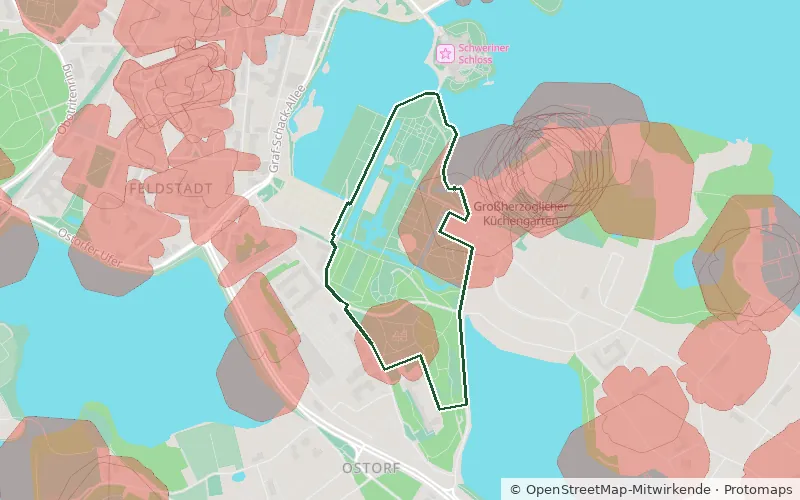
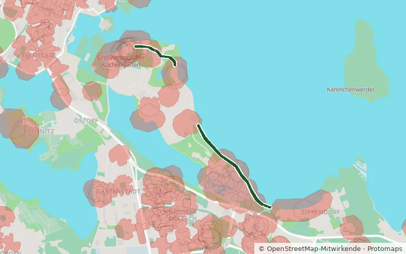
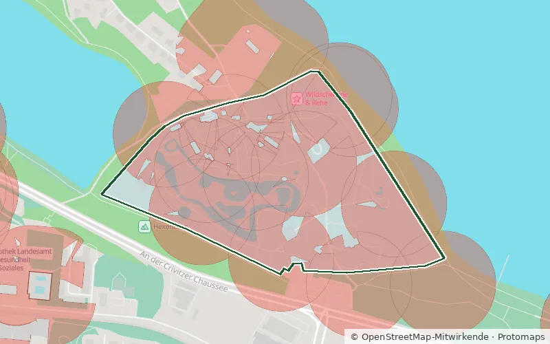
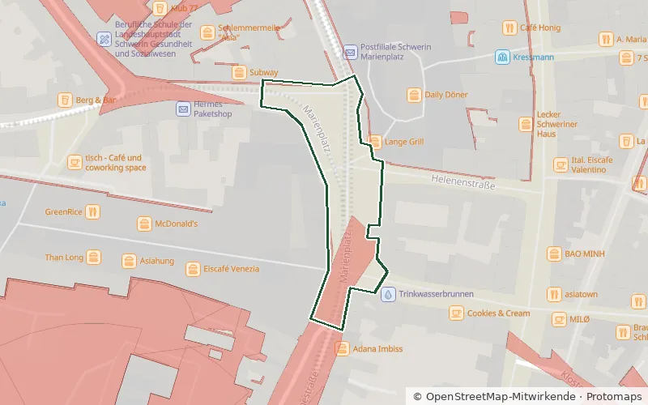

In Schwerin ist öffentliches Kiffen auf 10 km² verboten, das sind 7,9 % der Stadtfläche von 130 km². Grund sind 564 Einrichtungen wie Schulen und Spielplätze: In ihrer Sichtweite, bis 100 Meter vom Eingang und ohne Gebäude dazwischen, verbietet § 5 KCanG den Konsum. Dazu kommt die Fußgängerzone der Altstadt von 7 bis 20 Uhr und überall die Gegenwart von Minderjährigen.
Gut ein Fünftel der Stadt ist Wald (22 % der Stadtfläche), dazu kommen die Seen, allen voran der Schweriner See, von dem kaum etwas in einer Zone liegt (1 %). Ohne den Wald gerechnet sind es 8,9 %.

Woher die Zonen in Schwerin kommen
| Einrichtung | Anzahl | Zonenfläche |
|---|---|---|
| Schulen | 49 | 1,8 km² |
| Kitas und Kindergärten | 42 | 1,3 km² |
| Kindertagespflege | 1 | 0,1 km² |
| Spielplätze | 234 | 4,5 km² |
| Kinder- und Jugendeinrichtungen | 6 | 0,1 km² |
| Sportstätten | 232 | 5,5 km² |
Jede Art für sich gezählt, Überlappungen also mehrfach. Anbauvereinigungen nur, soweit in OpenStreetMap eingetragen.
Spielplätze und Sportstätten gibt es fast gleich viele (234 und 232); die größere Fläche haben die Zonen um die Sportstätten. Auf Spielanlagen verbietet die Straßen- und Grünflächensatzung der Stadt außerdem Alkohol und Rauchen, bis zu 5.000 Euro (Satzung, § 14).
Schlossinsel, Franzosenweg und Zoo
Der Burggarten auf der Schlossinsel liegt außerhalb jeder Zone (0 %), der Schlossgarten zu 26 %; dort liegt ein Spielplatz. Der Schlossgarten ist rund um die Uhr offen, der Burggarten schließt bei Dämmerung; eine Parkordnung hat die Schlösserverwaltung des Landes nicht veröffentlicht (Staatliche Schlösser und Gärten).


Am Franzosenweg am Ufer des Schweriner Sees liegen 67 % in einer Zone, wegen eines Spielplatzes und elf Sportanlagen in der Nähe. Der Zoo liegt fast ganz in einer Zone (90 %): Acht Spielplätze liegen auf dem Gelände.


Altstadt
Fußgängerzone sind nach einer Vorlage der Stadtvertretung von 2023 Mecklenburgstraße, Helenenstraße, Schmiedestraße, Puschkinstraße bis zum Markt, Marienplatz, Schloßstraße und Buschstraße (Stadtvertretung, 2023); seit Ende April 2026 gehören auch die Puschkinstraße bis zur Friedrichstraße, Domhof und Domstraße dazu (Nordkurier, April 2026). Dort gilt von 7 bis 20 Uhr Konsumverbot; blau sind die Fußgängerbereiche aus OpenStreetMap.
Von Mecklenburg- und Schmiedestraße liegen außerdem 35 % in einer Sichtweiten-Zone, vom Marienplatz 25 %, vom Markt 10 %. Die Promenade am Pfaffenteich liegt ganz in einer Zone (100 %).

Was sonst noch in Schwerin gilt
In Mecklenburg-Vorpommern ist die Stadt für Verstöße gegen die Konsumverbote zuständig (Zuständigkeitsverordnung). Sie hatte 2024 eingewandt, ihr Ordnungsdienst sei schon „voll ausgelastet“ (Nordkurier, September 2024). Die Beträge im Bußgeldkatalog des Landes haben wir nicht nachlesen können; das Gesetz erlaubt bis zu 30.000 Euro. Eigene Verbotszonen für Cannabis hat Schwerin nicht (Stand 27. November 2026).
Häufige Fragen zu Schwerin
Wo darf man in Schwerin kiffen?
Nach § 5 KCanG außerhalb der roten Flächen, etwa im Burggarten (0 % in einer Zone), solange er offen ist. Nicht auf Spielanlagen, tagsüber nicht in der Fußgängerzone der Altstadt, nie in Gegenwart von Minderjährigen. Weiß heißt nicht sicher erlaubt: Hecken, Bäume und fehlende Einrichtungen kennt die Karte nicht.
Wie genau ist das?
Täglich aus OpenStreetMap gerechnet, mit Gebäuden als Sichthindernis; die Zahlen hier sind vom 27. November 2026. Eine Orientierungshilfe, keine Rechtsauskunft (wie gerechnet wird).
Fehlt eine Einrichtung? Korrekturen in OpenStreetMap stehen am Tag darauf auf der Karte; bitte nur eintragen, was es vor Ort gibt.